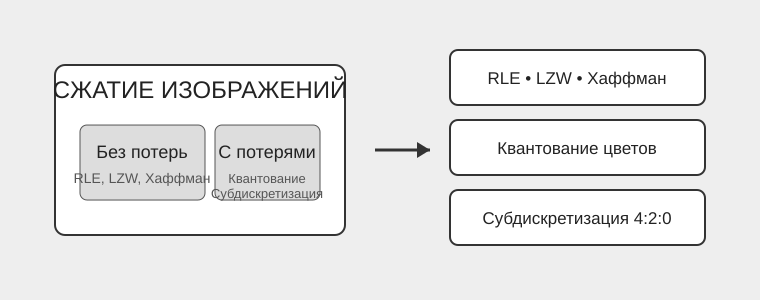

О проекте
Цель курсовой работы — провести сравнительный анализ алгоритмов сжатия изображений разных классов и определить условия их наиболее эффективного применения.
В работе исследуются три алгоритма сжатия без потерь и два алгоритма сжатия с потерями.
Исследуемые алгоритмы
- RLE — кодирование длин серий.
- LZW — словарный алгоритм сжатия.
- Код Хаффмана — статистическое кодирование.
- Квантование цветов — уменьшение количества цветов.
- Цветовая субдискретизация 4:2:0 — уменьшение объёма цветовой информации.
Классификация

RLE, LZW и код Хаффмана относятся к сжатию без потерь. Квантование цветов и цветовая субдискретизация относятся к сжатию с потерями.
Тестовые данные
Для эксперимента использовались изображения трёх разрешений:
- 512 × 512 пикселей;
- 1024 × 1024 пикселей;
- 1920 × 1080 пикселей.
Были исследованы пять типов изображений:
- одноцветное изображение;
- изображение с большими одноцветными областями;
- плавный градиент;
- сканированный текст;
- натуральное изображение.
Основные критерии сравнения
- коэффициент сжатия;
- время сжатия и восстановления;
- качество изображения по метрикам PSNR и SSIM.
Пример результатов
Ниже приведены результаты для одноцветного изображения разрешением 1920 × 1080 пикселей.
| Алгоритм | Коэффициент сжатия | Время сжатия, с |
|---|---|---|
| RLE | 168131,19 | 0,128 |
| LZW | 338,66 | 1,665 |
| Хаффман | 4,8 | 0,631 |
| Квантование цветов | 3 | 0,388 |
| Субдискретизация 4:2:0 | 2 | 0,087 |
Выводы
Универсального алгоритма сжатия не существует. Эффективность зависит от структуры исходного изображения.
RLE лучше всего подходит для одноцветных изображений и крупных однородных областей. LZW хорошо показывает себя на структурированных данных и сканированном тексте. Код Хаффмана даёт стабильное, но более умеренное сжатие.
Для фотографий и градиентов наиболее практичным вариантом является цветовая субдискретизация 4:2:0. Квантование позволяет получить трёхкратное сжатие, но заметнее ухудшает качество.